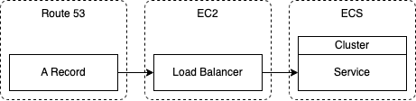

In this previous blog post I went through how to deploy and host a Docker container in ECS. But the resulting hosted container could only be accessed by the ECS service's public IP address and not a URL. This post fixes this by going through the steps of how to point of URL to an ECS service. This post assumes that the domain you want to use is already managed via Route 53.
The following also gives a summary of the AWS services involved that we need to create and how they relate to each other:
Firstly we need to create a security group for the load balancer. It will need to have inbound rules listening on port 80 from anywhere and for the host container port:
The ECS service the load balancer will be pointing to needs a health check endpoint. This is so the load balancer can check the service is healthy. In this example we'll assume that will be at /health. All it needs to be is some endpoint that returns a 200.
It's not possible to add a load balancer to an already running ECS service. But it is possible to create a new load balancer for an ECS service during it's creation. The steps listed in the previous post can be used to create the ECS service with the following addition:
When the load balancer and ECS service are up and running. You can check the load balancer is working by finding the load balancer in EC2, finding it's DNS name, copy and paste it into a browser then you should see your site.
The final step is to point the A record in Route 53 to the load balancer:
Now traffic to the domain should be routed to the ECS service.